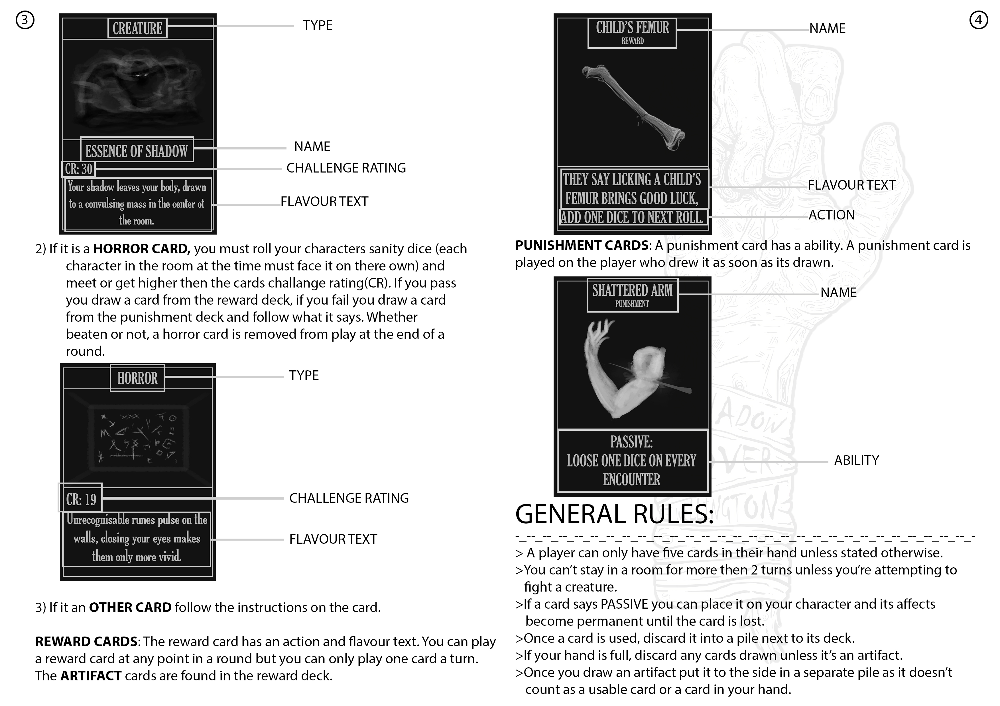

// Projects //
// FESTiMALS //
FESTiMALS is a multiplayer party game designed for tablets,this was my major project for university. I produced the project
and did programming along side, Vasley Thompson(lead programmer), Aran Campbell-Hawker(programmer + sound design), Josh Laubscher(programmer),
Luca Rosseels(lead artist), Stephanie Cruz(artist) and Jovanna Penn-Reina(sound design). with this project I aimed to make a game that could get
parents and kids to play together on there digital devices and bring a more posative light to games
// Floods of lustria //
The hill racer is a group project from uni. The goal of this project was to create a
working racing game where you race against the clock. For this project I scratch built
a water rising system that kills the player on contact with a respawn system that sets
the water back down so that the player does not get caught in a death loop. I did
everything coding wise besides the music
// Ai development //
I am developing a enemy AI that is supposed to patrol
and pursue players that the AI spots. It is in early development
and only has the basic following down the stealth mechanics are next
to be set in stone
// Mist Like Game //
The mist like game was the first ever game project that I worked on indavidualy
and finished all on my own. I did everything in the game except design the textures and make the audio
this was one of my prefered projects as it is the first game i ever took all the way through the
game development process
// Shadow Over Wellington //

I helped write the rules for and produce a board game with six other students in 2018
I helped with idea and visual development but I took a lead in developing a rules system
and designing a balanced and fun game to play there is a small segment of the rules on the left
// Flourish - Te Papa //
Florish is a game that I worked on as a seacond year in 2018 as an assistant
programmer and bug fixer. I didnt have as big of a role as i would have liked
but i am happy with the polishing and effort that went into it. as of mid 2019 you you will be able to find
and play the finished version of the game at Te papa